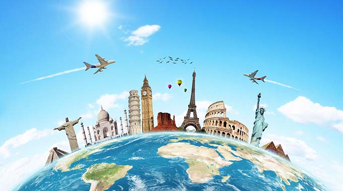
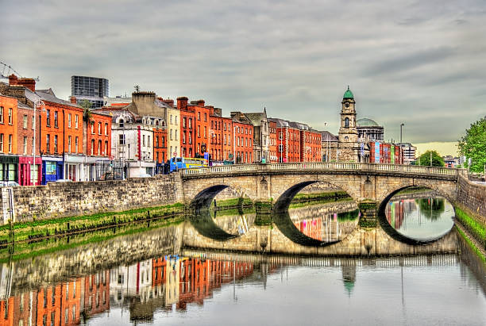
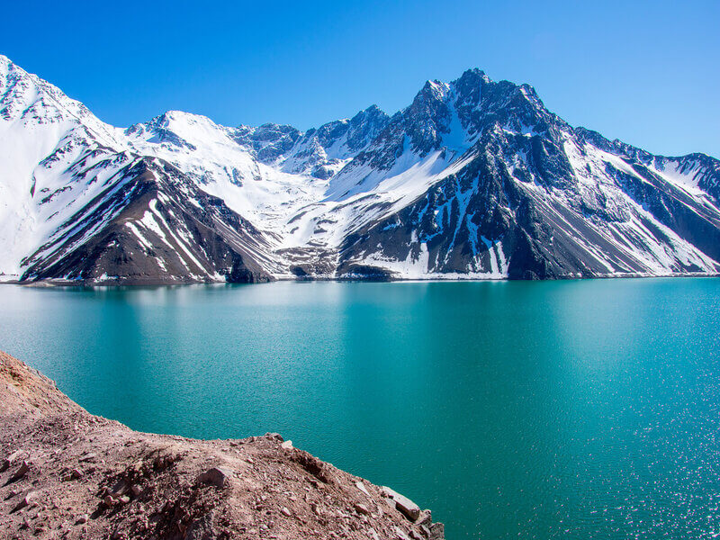

BEM-VINDO AO CODETRIP!
Aqui você encontra as melhores promoções para os melhores destinos!


Pacote promocional Irlanda
10x de R$599,00
*consulte juros do cartão de crédito
A Irlanda é uma ilha localizada no noroeste da Europa, dividida entre a República da Irlanda, país independente com capital em Dublin, e a Irlanda do Norte, que faz parte do Reino Unido. Sua história foi marcada por invasões vikings, domínio inglês, fome e grande emigração no século XIX. No século XX, conquistou a independência parcial e, após conflitos políticos e religiosos conhecidos como “The Troubles”, alcançou maior estabilidade com o Acordo de Paz da Sexta-Feira Santa (1998).
Hoje, a República da Irlanda é um país moderno e próspero, com forte economia em tecnologia e serviços, e mantém suas tradições culturais, como a música celta, o folclore e a língua gaélica. É também um importante destino turístico, conhecido por sua natureza verde, castelos medievais, pubs tradicionais e hospitalidade do povo.

Pacote promocional Chile
10x de R$450,00
*consulte juros do cartão de crédito
O Chile é um país da América do Sul, estreito e comprido, que se estende ao longo da costa do Oceano Pacífico. Seu destino histórico foi marcado pela colonização espanhola, independência no início do século XIX e períodos de ditadura e democracia. Atualmente, é considerado um dos países mais estáveis e desenvolvidos da região, com economia forte em mineração (especialmente cobre), agricultura e turismo. Entre seus principais destinos turísticos estão o Deserto do Atacama, a Patagônia, a Ilha de Páscoa e a cosmopolita Santiago.

Pacote promocional Paris
10x de R$990,00
*consulte juros do cartão de crédito
A cidade de Paris, capital da França, é um dos destinos mais visitados do mundo, conhecida como “Cidade Luz”. Possui grande importância histórica, cultural e artística, sendo berço de movimentos intelectuais e revolucionários. Entre seus pontos turísticos mais famosos estão a Torre Eiffel, a Catedral de Notre-Dame, o Museu do Louvre, o Arco do Triunfo e a Avenida Champs-Élysées. Paris também é referência em moda, gastronomia e cultura, atraindo milhões de visitantes todos os anos.
ACEITAMOS:
Obrigada por nos escolher!
É uma alegria poder contar com a sua confiança. Estamos comprometidos em oferecer sempre o melhor atendimento e cuidar de cada detalhe para que sua experiência seja inesquecível. Seja bem-vindo(a) e conte sempre conosco!